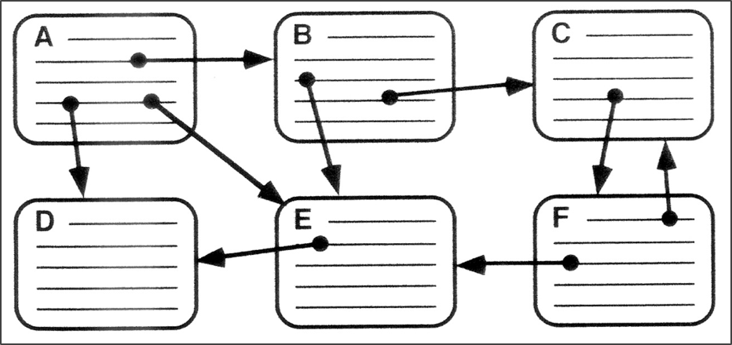

Hypertext Activities#
This set of activities extends student work with HTML and CSS into the hypertext creative media space, with opportunities to explore existing works of hypertextual literature as well as works build in Twine.
Exploring Hypertext: Electronic Literature#
Earlier in the semester, we explored command-line text games. Now, we’ll explore games or creative work that utilize hypertext. Founded in 1999, the Electronic Literature Organization (ELO) is a group of artists, writers, and scholars who “facilitate and promote the writing, publishing, and reading of literature in electronic media.”
Volume 4 of the Electronic Literature Collection (published by ELO) came out in June 2022. The volume’s editors describe electronic literature (or “eliterature”) in this way:
“Eliterature qualities derive meaning from a fusion of computational and literary layers. This fusion shows that human literary creativity entwines technological innovation with cultural and historic context. Eliterature works invite readers to engage with texts through embedded feedback mechanisms and often require traversing a network of potential paths.”
Activity
Step #1: While the whole volume includes 132 literary works, we’re going to focus on works that use hypertext. Your group can focus on one work and explore it together, or group members can choose different works, explore individually, and then share observations with the group. If your first choice isn’t working (or seems daunting), move to another option!
Step #2: Spend some time exploring the literary work, taking structured notes on your experience. If your group is looking at multiple works, feel free to copy the notes template.
Creative purposes or intent
Theme or topic
How you see hypertext at work
Your experience navigating or interacting
Other comments or questions
Exploring Hypertext: Twine#
“Twine is a free and open-source tool created by Chris Klimas for making interactive fiction and hypertext fiction in the form of web pages…Twine emphasizes the visual structure of hypertext, and does not require knowledge of a programming language as many other game development tools do. It is regarded as a tool which can be used by anyone interested in interactive fiction and experimental games.” (Wikipedia)
This activity gives students the opportunity to explore twine as an implementation of hypertext.
Activity
Step #1: Twine projects run the gamut from a preliminary introduction to hypertext to immersive interactive narratives to role-playing or scenario-based games. As a group, select one of the options from the “Start Here” section to explore as a group. Read the “About” information and choose the “Play Online” option to start interacting with the game.
Step #2: As your group moves through the Twine project, create a visual representation that attempts to keep track of how hypertext is being used or how the elements of the scenario fit together.
{kind=link}
Step #3: Get to a stopping point with your exploration. Discuss and take notes on some of your reactions and experiences.
Creative purposes or intent
Theme or topic
How you see hypertext at work
Your experience navigating or interacting
Other comments or questions
Step #4: Take a picture of your group’s step #2 diagram and add it to a shared folder.
If you have additional time…
Navigate to twinery.org in a web browser and explore the sample stories (or start building your own)!
A few tutorials to get you started:
Twine 2 Introduction/Tutorial (YouTube)
If you really want to dig in to Twine:
Anastasia Salter and Stuart Moulthrop, Twining: Critical & Creative Approaches to Hypertext Narratives (Amherst College Press, 2021)
Nick Montfort, Twisty Little Passages: An Approach to Interactive Fiction (MIT Press, 2005)